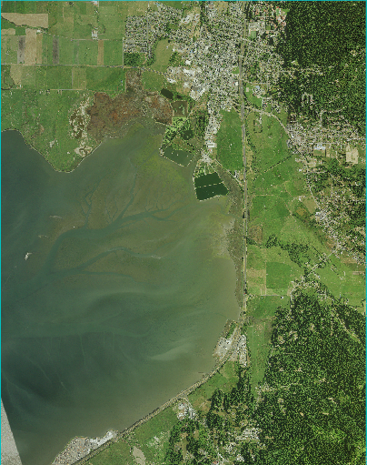
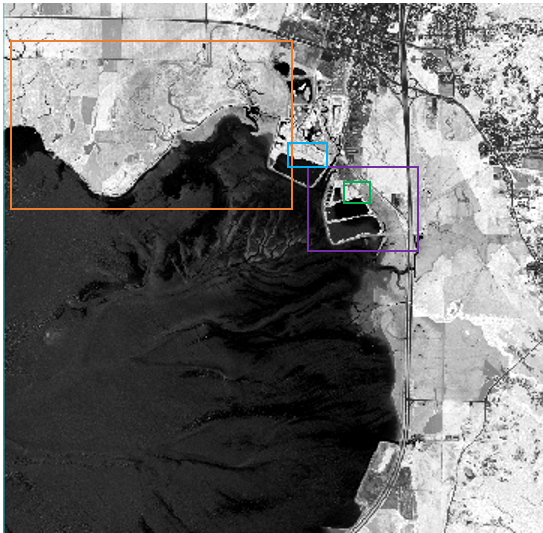

Land Use Lande Cover Change (LULCC) Arcata Sub basin, California • Identifying Change over time (1970 - 2010)
The goal of my project was to capture the land use land cover change in the Arcata Sub basin as it transformed from a sawmill facility and land fill to a wastewater treatment facility that integrates natural processes of constructed wetlands between 1970 and 2010. I analyzed the vegetation change, as well as water classification as I evaluate the transition of the Arcata Sub basin. My data will reflect 1989, 2009 and 2014, as major rehabilitation efforts were expanded during the 1980s.
The Humboldt Bay Arcata Sub basin in Arcata, California has transformed drastically since the 1960s due to change in local commerce demands, environmental policy, and the introduction of innovative habitat restoration and wastewater management practices into the area. The Arcata Sub basin, specifically the Arcata Marsh, was primarily utilized as a wharf to ship local timber. A mill was built on the marsh land to harvest and ship redwoods along the coast during the logging boom until the 1960s, and was simultaneously used as a land fill in other areas of the marsh. Due to the destruction of the local habitat, about 90% of the 8,700 acres of wetlands surrounding Humboldt Bay had been destroyed by the 1960s.
As the local economy dissipated, and local timber depleted through overlogging, fires and flooding, the mills and land fill were closed by 1973, and the city averted marsh utilization to meet new environmental policy standards and local demands for habitat restoration via an updated wastewater management system. While oxidation ponds and secondary wastewater treatment plants were built in 1957 along the Humboldt Bay Arcata Marsh area, this project was expanded following the 1972 Clean Water Act, as wastewater treatment plants were now prohibited from discharging treated wastewater into enclosed bays or estuaries unless the treated water was proven as “enhancing the receiving waters.” A treatment wetland and enhancement marsh was successfully piloted in 1979 by using partially treated wastewater and natural processes of wetland ecosystems by removing solids, organic matter and nutrients from wastewater by blocking out sunlight through the use of dense vegetation. Therefore, treatment wetlands could serve two purposes: to filter the city’s wastewater and also reintroduce biological productivity to the Humboldt Bay ecosystem. This project was expanded by the California Coastal Conservancy in 1981, by restoring three enhancement marshes and a tidally influenced lake, which uses improved technologies to remove remaining BOD and suspended solids before effluence is disinfected and released back into Humboldt Bay.
Following the finalization of wastewater practices, the marsh has been expanded and revitalized local wildlife. In 1981, 75 acres of the marsh were dedicated as the Arcata Marsh and Wildlife Sanctuary. Since then, the marsh has expanded to 307 acres, and includes freshwater marshes, salt marshes, tidal sloughs, grassy uplands, mudflats, and brackish marsh, and is the highest bird population coastal site between Bodega Harbor and Washington.
Therefore, I analyzed the transition and expansion of the wetland area of the Arcata Sub basin; specifically, as it relates to the introduction of native species (increased vegetation), and the water quality/reflectance.
Questions to Consider
a. How has the land cover changed along the Arcata Marsh between 1989, 2009 and 2014? Given the expansion of acreage, I would like to identify visible vegetation/biological productivity resulting from conservation practices.
b. Has the wetland restoration shown a visible reintroduction of native plants? (i.e. can I identify increased vegetation?)
c. How has the Humboldt Bay water been affected by the wastewater treatment plant? Is there a higher or lower vegetation index; is there more/less turbidity? The wastewater plant utilizes dense vegetation in the wetland ponds, does it appear as partially vegetated and water.
Data and Collection
A note about data: I used 1989, 2009 and 2014 dates to assess the land change over time in the Arcata Sub Basin. 1989 was the best assessing the starting point for vegetation growth following the 1987 expansion of the Arcata Marsh, and 2009 to 2014 allowed me use additional remote sensing skills for comparison, as they both have four bands to work with. Therefore, four bands allowed me to use NDVI comparisons between 2009 and 2014. While I had preferred to use data at 10 year increments, I felt the dates I used for my analysis were the highest quality images available, and therefore would provide the most accurate results.
| Type | Resolution | Bands | Acquisition Date |
|---|---|---|---|
| DOQ | 1 meter | Red, Green, Blue | April 28, 1989 |
| NAIP TIF | 1 meter | NIR, Red, Green, Blue | June 1, 2009 |
| NAIP TIF | 1 meter | NIR, Red, Green, Blue | June 7, 2014 |
April 28, 1989

June 1, 2009
June 7, 2014
REMOTE SENSING METHODS
a. Preprocessing – Dark Subtract: Given that the west coast, specifically Humboldt County, has copious amounts of fog from the Pacific Ocean, I found it vital to use the dark subtract tool to account for atmospheric correction in my images. The dark subtract tool removed effects from scattering from each band based on the band minimum. While this didn’t affect my 1989 image, this did shift the pixel values of my 2009 and 2014 images; notably shifting the minimum pixel value to 0, and lowering the mean values for all bands for both years.
b. Preprocessing – Co-registration: Image co registration fuses two images together to ensure they are viable for analysis across multiple years. I collected control points from 1989 to 2009, then 2014, to ensure that my data was consistent. Given that my data used the same pixel values, this did not greatly alter my image.
c. Pre classification scatterplot: Before classifying the image, I wanted to get a sense of the ground truth. Therefore, I used false color image to detect where the density of pixels were located in the images, and if they were associated with certain land cover types. I found that there is a high positive relationship in urban areas between red/NIR bands(cyan), medium positive relationship in the Humboldt Bay area between the red/NIR bands (green) – with high density of points. Vegetated areas appeared as high NIR, low Red, with a high density of points (red). And finally, the oxidation ponds appeared as a low positive relationship (yellow). The most interesting takeaway was that the oxidation pond and water body appeared as different colors. This confirms that they reflect different pixel values. An example of the 2014 scatterplot is shown below.
Preprocessing - Co-registration
Pre classification scatterplot
Normalized Difference Vegetation Index (NDVI)
The NDVI tool transforms multispectral data into a single band image that distributes vegetation values on a scale of –1 (not vegetated) to 1 (highly vegetated). I found this tool to be useful in showing how to classify the ground truth in regards to vegetation for the 2009 and 2014 images. As background, McDaniel’s Slough Project began in 2007 to cooperatively restore and enhance up to 250 acres of the former tide lands, therefore this was a key area of interest for me in identifying vegetation change.
Results
a. The McDaniel’s Slough area noticeably decreased its vegetation index between 2009 and 2014, both visually and by using the cursor value to view the NDVI. The McDaniel’s Slough area can be viewed in orange below. In 2009 the NDVI was around .23, and by 2014 the NDVI lowered to around -.08, showing that the transition to tidelands was successful as the amount of grassy area had lowered, and it is now being adapted to its natural shore/tide like habitat. Therefore, a lower NDVI, and visibly darker region, shows that the McDaniel Slough Project has been successful in restoring former tide lands between the 2009 and 2014 years, as it has produced more a productive tide ecosystem.
b. The oxidation ponds, in purple below, were another area of interest to me, as these ponds intake wastewater and utilize bacteria to break down the sewage. The algae in the ponds provide oxygen to the bacteria, therefore a more productive system of oxidation ponds would be seen with higher vegetation within the ponds. I found in the lowest oxidation pond the NDVI increased from -.81 to -.33; in the middle oxidation pond the NDVI increased from -.9 to -.26; and in the top oxidation pond the NDVI increased from -.79 to -.18. Therefore, the vegetation in these oxidation ponds drastically improved between 2009 and 2014, which therefore improves the process of the wastewater treatment altogether through increased algae productivity.
c. Following the results of the oxidation ponds, I was interested to find that the treatment marshes, green below, next to the oxidation ponds, remained the same in NDVI index between years at .35. Bullrush and cattails the treatment marshes shade water so algae cannot grow. They slow the flow of wastewater to allow pollutants reach the bottom, and to further break down wastewater. Therefore, the vegetation in these treatment marshes has provided the same productivity and purpose between 2009 and 2014, showing that this system has remained effective.
d. Mt. Trashmore, in blue below, also highlighted positive changes between 2009 and 2014. Mt. Trashmore was once the location of a landfill until 2973, which has since undergone restoration efforts. The NDVI index showed that this area increased productivity from .265 in 2009 to .457 in 2014. Therefore, vegetation productivity successfully increased between those years. And, it is now a popular place for bird watching in the marsh.
2009 NDVI
2014 NDVI
Supervised Classification
I used the maximum likelihood supervised classification method to identify landscape changes that aren’t visible to the naked eye for 1989, 2009 and 2014. I used regions of interest: bare soil, urban, forest, water, shore, grass and bay as the classes. The NDVI outputs gave me a good sense of the ground truth for the 2009 and 2014 images, and further informed my decisions for the 1989 classification as well. I felt this method was necessary in order to incorporate the time series analysis with the 1989 image, that could not be processed for the NDVI tool.
Results
a. The NDVI results were mimicked in the classification results, as we see the McDaniel’s Slough area increase between 1989 to 2014. You can see that in 1989 the slough area was previously just a grassy area with no marsh/tide like productivity. By 2009 the project had already began and was making progress; and in 2014 you can see that the grassy area starts to classify as shore-like.
b. Another interesting result that paralleled the NDVI results was Mt. Trashmore. You can see that in 1989 Mt. Trashmore classified as a mix of urban and bare soil, which is consistent with it recently being a landfill. By 2009 the area classified as grass, and by 2014 it was a mix of grassy and forest, showing that over time Mt. Trashmore became a more vegetated and productive landscape – a successful restoration effort.
c. One major addition to the landscape since 1989 was Brackish Pond, black below, and its northern surrounding ponds. This again parallels the timeline of projects for the Arcata marsh. The Butcher’s Slough Enhancement Projected, north of Log Pond began in 2003, and the South I Street Pond was constructed in 2004. These changes are shown in the classification, as you can clearly distinguish that there was no water in those areas in 1989.
1989 Supervised Classification
2009 Supervised Classification

2014 Supervised Classification
Post Classification Results
2014 Image Classification: Kappa Coefficient: 0.8801; Overall Accuracy: 94.0251%
There is an 88.01% chance that my output is not due to random chance according to the kappa coefficient. There is a strong agreement with a high level of accuracy at 94.0251%.
Bare soil and urban had the highest levels of commission rates at 65% and 35%, respectively. This means that I left out too many diverse pixels when developing those classes. Water and bare soil had the highest omission rates at 30% and 26%, respectively. This means that I added too many inaccurately classified pixels in these classes.
2009 Image Classification: Kappa coefficient: .8696; Overall accuracy: 93.4615%
There is a 88.96% chance that my output is not due to random chance according to the kappa coefficient. There is a strong agreement with a high level of accuracy at 93.4615%.
Water and urban had the highest levels of commission rates at 57% and 40%, respectively. This means that I left out too many diverse pixels when developing those classes. Bare soil and water had the highest omission rates at 53% and 19%, respectively. This means that I added too many inaccurately classified pixels in these classes.
1989 Image Classification: Kappa coefficient: .7202; Overall accuracy: 85.7533%
There is a 72.02% chance that my output is not due to random chance according to the kappa coefficient. There is a medium agreement with a mid-high level of accuracy at 85.7533%.
Water and urban had the highest levels of commission rates at 88% and 64%, respectively. This means that I left out too many diverse pixels when developing those classes. Urban and water had the highest omission rates at 62% and 45%, respectively. This means that I added too many inaccurately classified pixels in these classes.
Overall, my post classification results revealed that I would have had a more accurate study had I classified urban, water and bare soil more closely. If I had clipped my study area to the marsh area, I would have likely come away with more accurate results, as it would have limited the amount of noise from the Arcata City. Initially, I found it was relevant to keep the city center in my analysis, as I was not sure how the growth of the city might impact the marsh. My analysis showed that it just provided more noise in my classification, and it would have been best to omit.
References
Arcata Marsh & Wildlife Sanctuary | Arcata, CA, www.cityofarcata.org/340/Arcata-Marsh-Wildlife-Sanctuary. Fish Populations, www.krisweb.com/krishumboldtbay/krisdb/webbuilder/ar_m14.htm. “Tidal Marsh Monitoring.” Home | Tidal Marsh Monitoring, www.tidalmarshmonitoring.org/monitoring-methods-aerial-photography-remote-sensing.php. Watersheds, Coastal. Arcata Bottoms, coastalwatersheds.ca.gov/HumboldtBay/RestorationInventory/ArcataBottoms.aspx.